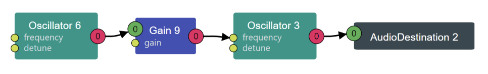

Worked on with Ryan Xu and Ellen Guo
I focused mainly on the "Model" and "Method" sections of the textbook for the R2D2 robotic chatter. To make these "babbling computer noises", the "Model" section instructs to "completely randomise the parameter space of a simple synthesizer". Basically, I did FM synthesis (as suggested by the "Method" section) with randomized parameters. I randomized the carrier frequencey, period, modulator index, modulator frequency, and waveform.
For the FM synthesis, I modified by code from HW 2 and created a FMPlayNote function which takes in the random parameters and plays a certain sound for the time specified. Since we want only one oscilator at once and sounds to be one after another, I had my FMPlayNote function take a start and stop time that was based on the current time + the random period that accumulates as the sounds continue so we can prevent oscilator overlap. Technically, you could have more than 1 robot chatter at once if you press play again. I also have it stopping after a certain amount (not an infinite loop - wanted to do something similar to the Brook where the code runs and then the button starts and stops the audio context, but it was freezing my browser).
The book says that we can "drive the modulation and index values well outside the normal range to deliberately introduce foldover aliasing", so I played around with these variables and increased the upper bound. I also made the period go from 0 to 0.25 and adjusted the carrier frequency bounds based on how the reference sounded.
Above is a screen shot of FM synthesis from the professor's slide. I wanted to get a screenshot of my webaudio, but nothing was showing up (for this and other examples). But in essence, this R2D2 is just the same as the FM synthesis from before, with the Modulator Oscillator node connected to the Modulator Index gain node connected to a global gain (not shown here) connecting to the audio destination.